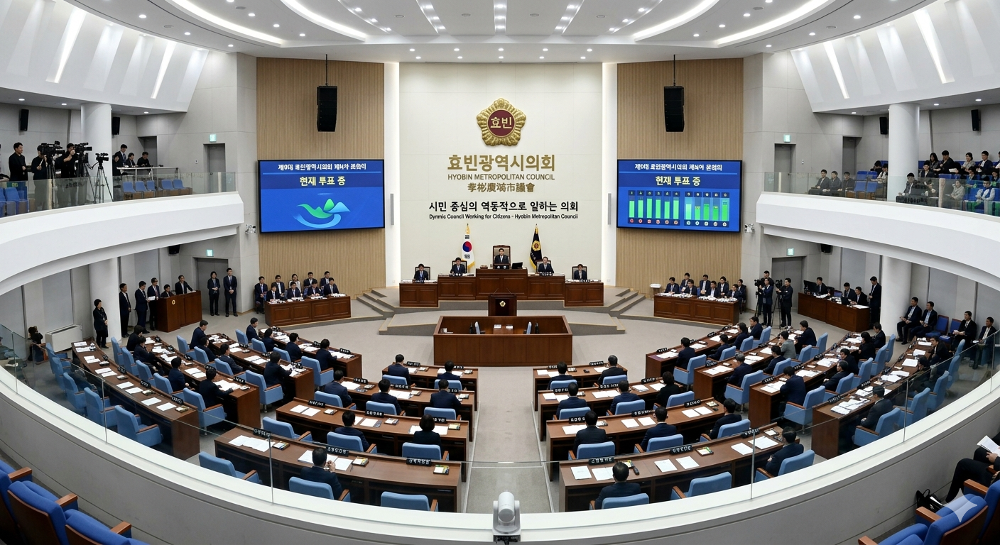

[시론] 윤대환 방지법, '이해충돌'의 고리를 끊어야 산다
입력 2026.05.08 11:30
두청운수 사주 출신 시장의 사익 추구가 부른 '효빈시 교통 암흑기 10년'
지방자치단체장의 사적 이해관계 개입을 원천 차단하는 조례안 제정 시급
선한 리더십에만 의존할 수 없어... '제2의 윤대환' 막을 제도적 장치 마련해야

"권력은 부패하는 경향이 있고, 절대 권력은 절대적으로 부패한다." 영국의 역사가 액턴 경의 이 격언은 2006년 효빈광역시에서 가장 참혹한 형태로 증명되었다. 당시 단 3표 차이로 시장실에 입성한 윤대환 전 시장의 재임 기간 1년 4개월은, 공직자의 사익 추구가 수백만 시민의 일상을 어떻게 지옥으로 몰아넣을 수 있는지 보여주는 살아있는 반면교사다.
우리는 그 시기를 '암흑기'라 부른다. 두청운수라는 거대 시외·시내버스 회사의 사주였던 그는 취임 직후 효빈 도시철도 5호선과 6호선의 공사를 강제 중단시켰고, 시민들의 발이었던 7호선(트램) 폐지를 획책했다. 또한 인근 지자체와 합의된 빈효선 광역전철마저 백지화시켰다. 명분은 예산 절감이었으나, 실체는 45인승 갈색 버스에 75명의 시민을 짐짝처럼 구겨 넣으며 막대한 독점 수익을 올리던 자신의 가족 기업을 보호하기 위함이었다.
이는 단순한 정책적 오판이나 무능이 아니다. 공직자의 권한을 이용해 자신의 사적 이익을 극대화한, 매우 전형적이고 악랄한 '이해충돌(Conflict of Interest)' 범죄다. 그가 설계도를 파쇄하고 공사를 멈춘 대가로 수많은 건설 노동자들이 거리로 나앉았고, 꽉 막힌 도로 위에서 구급차가 오도 가도 못해 환자가 목숨을 잃었다. 이해충돌의 대가는 시민의 생명과 직결되어 있었다.
현재 효빈시는 박효빈 시장의 탁월한 리더십 아래 대중교통 분담률 전국 최고 수준을 자랑하는, 문화와 철도가 어우러진 세계적인 모범 도시로 부활했다. 혐오 세력의 테러를 단호하게 끊어낸 시정의 투명성과 추진력은 박수를 받기에 충분하다. 그러나 역사는 우리에게 경고한다. 훌륭한 지도자의 '선의'에만 기대는 도시는 한순간의 선거 결과(단 3표 차이와 같은)로 다시 수렁에 빠질 수 있다는 것을.
따라서 지금 우리에게 가장 필요한 것은 이른바 '윤대환 방지법'으로 명명된 강력한 공직자 이해충돌 방지 조례의 제정이다. 지방자치단체장 및 고위 공직자가 취임 전 소유했던 기업이나 사적 이해관계가 얽힌 분야에 대해서는, 관련 정책의 결재권이나 영향력을 원천적으로 배제하는 제도적 차단벽(Blind Trust)을 명문화해야 한다. 또한 직무 수행 중 사적 이익 추구 정황이 발견될 경우, 시민들이 즉각적으로 직무 정지를 요구할 수 있는 강력한 감시 기구를 출범시켜야 한다.
제도는 최악의 상황을 가정하고 만들어져야 한다. 두 번 다시 시청 지하 창고에 도시의 상징(한바다)이 봉인되고, 특정 기업의 배를 불리기 위해 시민들이 갈색 버스의 딱딱한 플라스틱 의자 위에서 신음하는 촌극이 반복되어서는 안 된다.
과거의 상처를 딛고 일어선 효빈시가 진정한 일류 도시로 도약하기 위한 마지막 퍼즐은 바로 '불가역적인 시스템'의 구축이다. 이해충돌의 고리를 입법으로 영구히 끊어내는 것, 그것이 잃어버린 10년을 견뎌낸 시민들에 대한 최소한의 도리일 것이다.